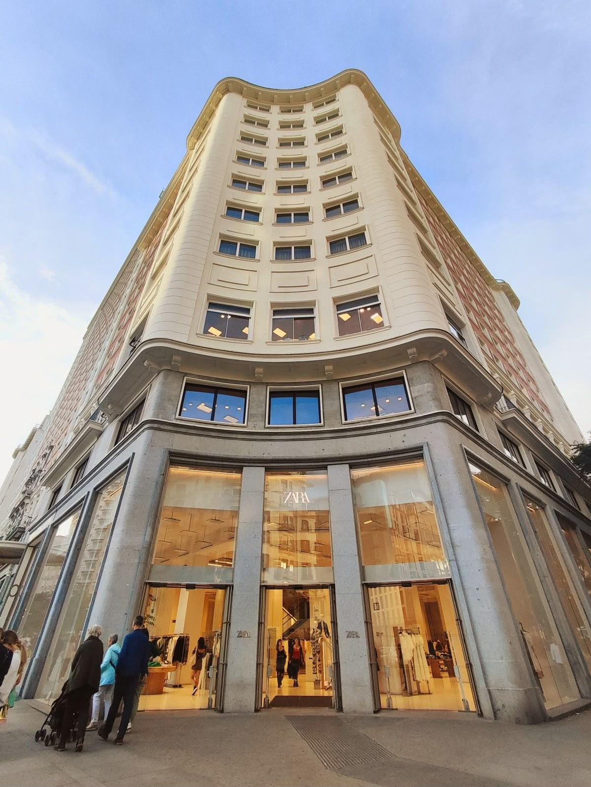
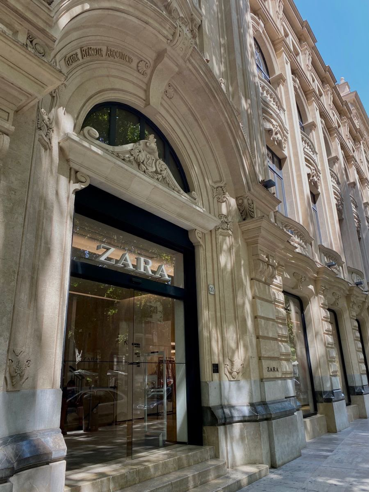
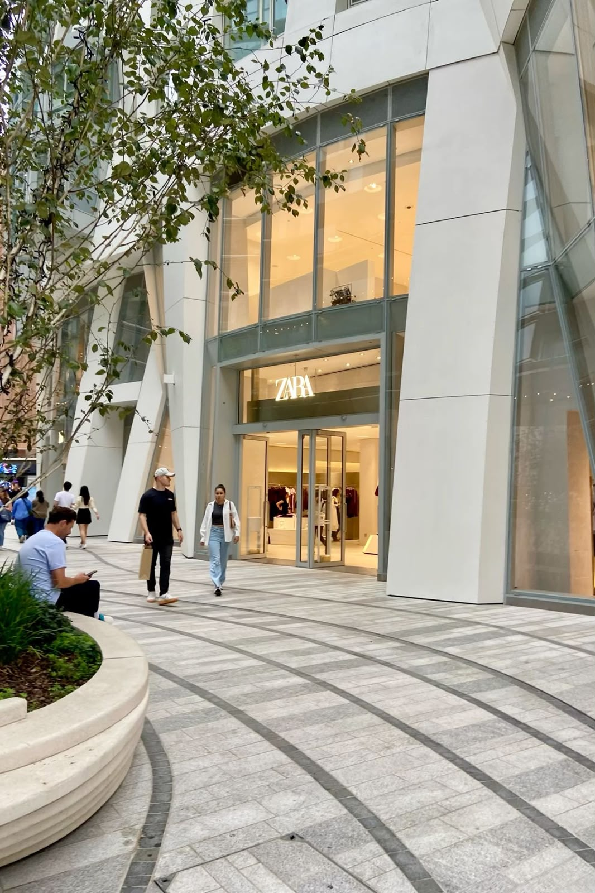
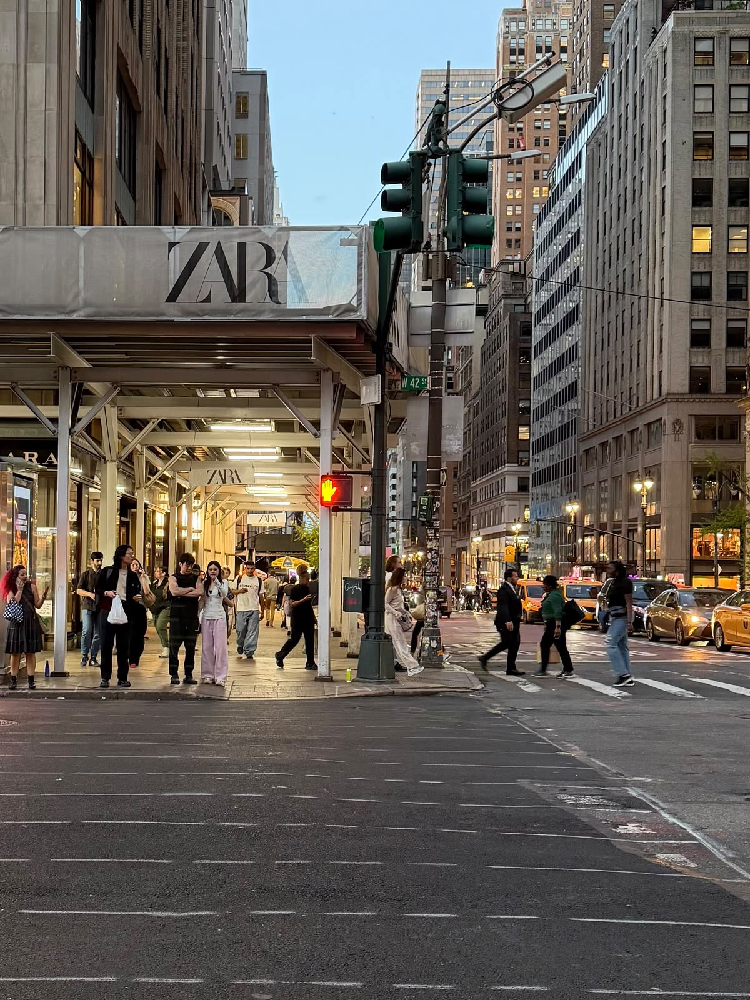
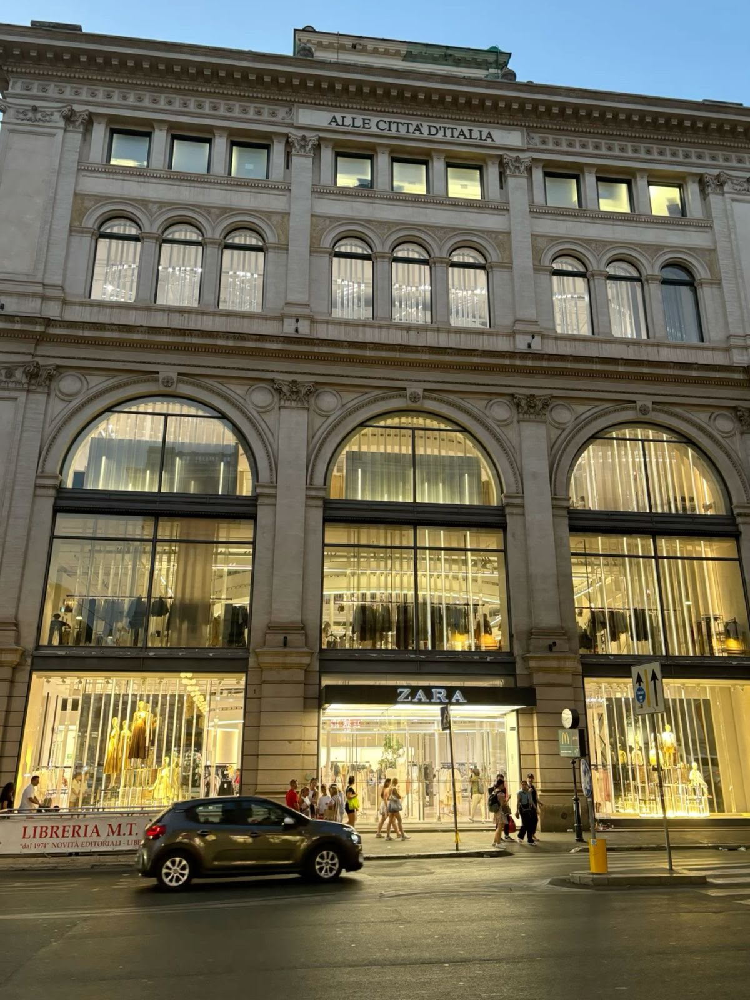

Una de las ubicaciones más representativas de Zara en Madrid. Está situada en una de las calles comerciales más conocidas de la ciudad, rodeada de tiendas de moda, lujo y diseño. Es un lugar ideal para representar la presencia de Zara en España, país donde nació la marca

La tienda está ubicada en una de las avenidas más famosas de París. Su presencia en esta zona refleja la expansión internacional de Zara dentro de una de las principales capitales de la moda.

Oxford Street es una de las zonas comerciales más importantes de Londres y concentra numerosas marcas internacionales. Zara cuenta allí con una de sus ubicaciones destacadas, acercando sus colecciones a uno de los grandes centros de compras de Europa.

El barrio de SoHo es conocido por sus tiendas, galerías de arte y arquitectura característica. La presencia de Zara en esta zona conecta a la marca con una de las ciudades más importantes de la moda y la cultura urbana

Via del Corso es una de las calles comerciales más conocidas del centro de Roma. La ubicación de Zara allí combina la identidad contemporánea de la marca con el entorno histórico y turístico de la capital italiana.
